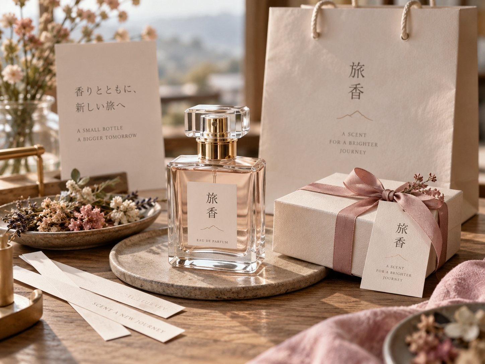

01 選ぶ
いくつもの香りに触れながら、心惹かれる素材を選びます。
旅香 -TABIKA-
古くから職人の手仕事が息づく浅草。歩いて、見て、味わうだけでなく、自分の手でものをつくる時間が、旅の記憶をもっと深くしてくれます。
この街で出会う素材や文化に触れながら、香りを選び、つくる。浅草で過ごすひとときに、自分だけの体験を加えてみませんか。
選ぶ
香りの素材に触れ
好みを見つける
つくる
浅草の空気を感じながら
自分の香りを調香する
持ち帰る
旅の思い出と一緒に
香りを持ち帰る
香りを選び、つくり、持ち帰る。浅草で自分だけの香りに出会う体験です。
いくつもの香りに触れながら、心惹かれる素材を選びます。
香りの違いを楽しみながら、自分の好みを見つけます。
選んだ香りを丁寧に調合し、自分だけの香りに仕上げます。

完成した香りを、浅草の旅の思い出とともに持ち帰ります。